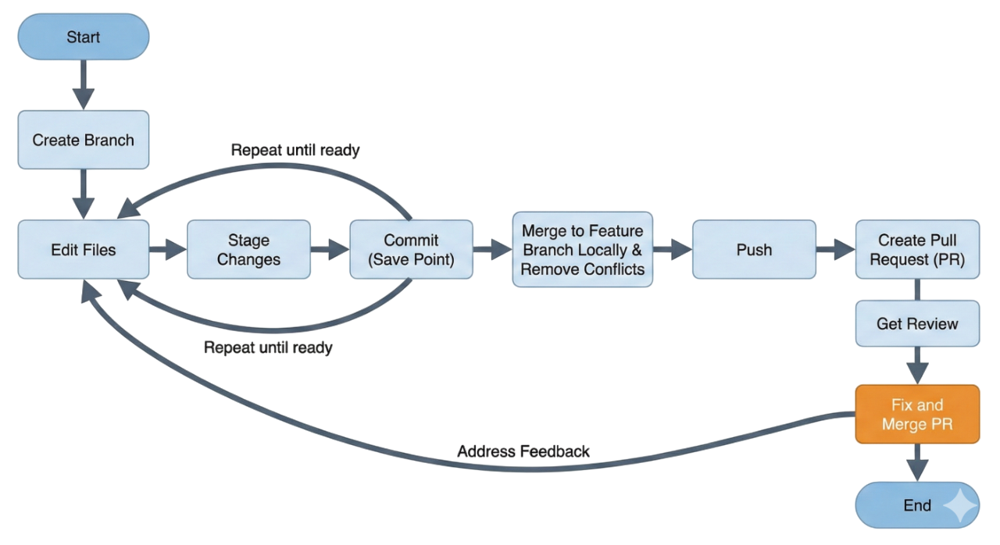

How to Work with Git + GitHub
This guide is not meant to turn you into a Git expert. It's meant to make you productive and safe when working with a real team on a real codebase.
There are often many ways to accomplish the same task in Git. Choose the approach that works best for you. While it's best to know how to work with Git on the command line, starting with a friendly UI like GitHub Desktop can be a good option to start and better understand the right flows, then later move to the command line.
If you remember only one idea, remember this: Git is the "save system" for software teams, and GitHub is the place where those saved changes become visible, reviewable, testable, and mergeable by the team. Your job isn't only to write code — it's to write code in a way that the team can trust, review, and integrate without drama.
1) Git Concepts (Mental Model)
It helps to have one simple picture in your head:
Remote repo (GitHub) → you clone it → local repo (your machine)
Then you work like this:
branch → [edit → stage → commit] × repeat → merge locally → push → Pull Request → review → merge PR
That's it. Everything else is variations of this loop.
Repo: Local vs Remote
A repository (repo) is your project folder plus its entire history of changes. You always have two "copies" of the repo in your workflow:
- Your local repo, which is your private working space on your laptop
- The remote repo, usually called
origin, which lives on GitHub and is shared with the team
When people say "push to GitHub", they mean "send my local commits to the remote repo".
Commit History: The Timeline of the Project
Git doesn't store "versions of files" like Google Docs. It stores a history of changes as a chain of commits. A commit is a snapshot of work with a message that explains what changed and why. Over time, the project becomes a story made of commits.
This matters because when something breaks, you don't want to guess. You want to know exactly when it broke and what changed right before it.
Branch: Your Private Lane of Work
A branch is the safest way to work on a feature without disturbing the stable code everyone else depends on.
Think of main as "the shared highway" and your branch as "your lane". You build
your feature in your lane, and when it's ready, you merge it back through a Pull Request.
Working Directory vs Staging
Git separates changes into two layers:
- Working directory: files you edited (your work-in-progress)
- Staging area: files you selected to include in the next commit (your next "save point")
Staging exists so you can control what exactly goes into the commit. That makes commits clean and reviewable.
Pull Request (PR): How Teamwork Actually Happens
A Pull Request is not just a button you click at the end. It's a workflow tool. A PR is where:
- Your change becomes visible to the team
- Tests/CI can run automatically (if the repo has it)
- Feedback can happen before anything touches
main - Your work is approved by the right people
The PR is usually reviewed by:
- The team lead (to ensure quality, architecture, and consistency)
- Coworkers working on related code (to catch mistakes and coordinate behavior)
The goal of review is not to "judge" you. It's to prevent the entire team from wasting time later.
2) The Core Commands (Minimal Set)
You don't need 50 commands. You need a small set that you can execute confidently. If you master these, you can contribute to almost any team project.
git clone
This is how you get the project onto your machine for the first time.
git clone https://github.com/org/project.gitgit status
This is your dashboard. Use it constantly. It tells you what you changed and what's staged.
git statusgit checkout -b <branch>
This creates a new branch and moves you into it. You do this before you start a task.
git checkout -b feature/login-ui
# OR
git switch -c feature/login-uigit add
This moves changes into the staging area (meaning: "this goes into my next commit").
git add .
# OR stage a single file:
git add src/app.jsgit commit -m
This creates a save point with a message.
git commit -m "Add login form validation"git push -u origin <branch>
This uploads your branch to GitHub so the team can see it (and so you can open a PR).
git push -u origin feature/login-uigit pull --rebase
This pulls new commits from the remote and places your commits on top, keeping history clean.
git pull --rebasegit log --oneline
This shows commit history quickly. It helps you understand what happened recently.
git log --onelinegit diff
This shows what changed before you commit. It prevents accidental junk commits.
git diffRemember: almost all of these commands can also be executed via GUI tools like GitHub Desktop.
3) The Real Workflow (What You Do Every Time)
Think of this as your daily operating system for Git. The goal isn't perfection — it's consistency.
When everyone follows the same flow, you avoid most Git pain and keep main stable for the whole team.
You almost always begin the same way: sync the branch you're branching from, so you don't build on stale code.
git checkout main
git pull --rebaseNow create a dedicated branch for your task:
git checkout -b feature/<short-name>
Make many local commits while working — like pressing "Save" in Word.
A commit is not "the final version." It's a checkpoint. Frequent commits protect you from losing progress,
make debugging easier ("what changed right before it broke?"), and make code review smoother because
your changes are a clear sequence instead of one huge dump.
A good rhythm is simple: finish one meaningful step → commit → continue.
git status
git diff
git add .
git commit -m "Add login form validation"When you're ready to share your work, push the branch to GitHub and open a Pull Request:
git push -u origin feature/<short-name>A PR is where your code becomes teamwork: it gets reviewed, tested, and merged in a controlled way. A PR typically needs approval from the team lead (quality/architecture) and teammates working in the same area. Treat review as collaboration: respond to comments, improve the code, push updates, and keep the PR focused until it's ready to merge.
Branch from the branch you want to merge into (your "parent branch").
If your work should merge into main, branch from main.
If your work is part of an existing feature branch, branch from that feature branch instead.
git checkout feature/payments
git pull --rebase
git checkout -b bugfix/payments-null-checkWatch: Understanding Pull Requests
Please watch this short video to understand what is expected when creating a PR. It will also discuss briefly what we have covered and will be covering, so it will be a good intuition and reference:
4) Branching Best Practices (How Teams Stay Sane)
Branching rules exist for one reason: coordination. On a team, chaos is expensive.
A good branch is:
- Narrow in scope
- Easy to understand
- Easy to review
- Easy to revert if needed
That's why the default behavior is "one branch per task".
Branch Naming
Branch naming doesn't need to be perfect, but it must be predictable. A branch name should tell reviewers what it is without opening the PR.
feature/login-uibugfix/null-check-ordershotfix/prod-crash
Avoid working directly on main.
Even if you're "just changing one small thing". The one small thing is exactly how teams break main.
5) Before Opening a PR
If you open a PR too early with incomplete work, the team lead and reviewers waste time reviewing something that isn't ready. If you open a PR too late with a huge change, reviewers waste time reviewing a monster.
The goal is simple: open a PR when it is coherent, testable, and small enough to review.
PR Ready Checklist (Do This Every Time)
- You pulled the latest changes from the parent branch (
mainor the relevant feature branch) - Conflicts are resolved locally
- The project builds / runs
- Relevant tests were run
- No debug prints, temporary hacks, or "commented-out solutions"
- Formatting/linting is acceptable (if the repo enforces it)
- PR scope is focused (not multiple unrelated changes in one PR)
6) When Things Go Wrong (Common Fixes)
You will eventually hit problems. That's normal. The goal isn't to avoid problems — it's to have safe default fixes.
It's also important to understand that "things going wrong" does not mean you failed. In real teams, it is completely normal to:
- Get a push rejected because the branch moved forward
- Open a PR and then be asked to fix issues after review
That feedback loop is not a punishment — it's the workflow doing its job.
Case 1: "My push was rejected because remote has new commits"
This happens when your branch on GitHub has moved forward (usually because someone pushed updates, or you're behind).
Safe fix:
git pull --rebase
git pushCase 2: "I opened a PR to the wrong branch"
This is more common than people admit. It's not a disaster.
Safe fix: On GitHub, edit the PR and change the base branch to the correct parent branch.
Case 3: "Reviewers requested changes and now I need to fix things"
This is one of the most common situations in professional development. Once a PR is open, your job is simple: treat review comments like a to-do list.
- Go back to your local feature branch
- Fix the issues one by one
- Re-test whatever is relevant
- Commit your fixes (small, clean commits are ideal)
- Push the updates to the remote branch
You do not open a new PR. Once a PR exists, pushing more commits to the same branch will automatically update the PR.
When you're done, communicate clearly: reply to review comments, explain what you changed, and re-request review.
Case 4: "I accidentally committed to main"
The key is: don't panic, and don't push.
Safe fix:
# Move your work into a proper feature branch
git checkout -b feature/move-accidental-main-work
# Restore main to its expected state
git checkout main
git pull --rebase
# Push your feature branch and open a PR
git push -u origin feature/move-accidental-main-workFinal Mindset (How Good Teams Work)
If you work like this consistently:
Do
- Branch before you start
- Commit often as checkpoints
- Keep changes small and readable
- Sync with the parent branch
- Open PRs that are testable and focused
- Take review seriously and collaborate
Don't
- Work directly on
main - Make one giant commit at the end
- Open PRs without testing
- Ignore review feedback
- Fix conflicts on GitHub if avoidable
Then Git becomes boring — and that's the goal. When Git is boring, your team moves fast.
Further Resources
- GitHub Docs – Hello World tutorial
- Pro Git book – comprehensive coverage of Git concepts
- GitHub Skills courses – free, hands-on courses hosted on GitHub
- GitHub Tutorial for Beginners – free video series